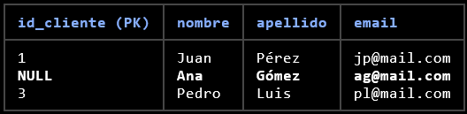
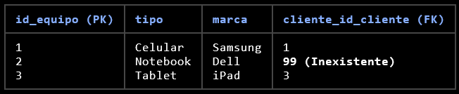
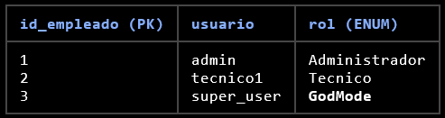
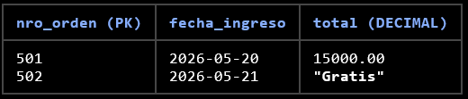

01
Las 12 Reglas de Codd (En criollo)
- 0. Regla Fundamental
- Información
- Acceso Garantizado
- Tratamiento del NULL
- Catálogo en Línea
- Sublenguaje de Datos
- Actualización de Vistas
- Inserción, Actualización y Borrado
- Independencia Física
- Independencia Lógica
- Integridad
- Distribución
- No Subversión
02
Integridad
03
El Triángulo de la Integridad. Para que una base de datos sea confiable, debe cumplir con tres pilares fundamentales:
- Integridad de Entidad
- (La Regla de la PK)
- Regla: Toda tabla debe tener una Clave Primaria (PK).
- Restricción: Ningún valor de la PK puede ser **NULL**.
- ¿Por qué?: Si no sé quién es la entidad, no puedo diferenciarla de las demás.
- B. Integridad Referencial
(La Regla de la FK) - Regla: Si existe una Clave Foránea (FK) en una tabla, su valor debe:
- Coincidir con un valor existente de la PK en la tabla relacionada.
- O ser **NULL** (si la relación es opcional).
- Estado Prohibido: El "Huérfano".
- (Ej: Un equipo que pertenece al cliente ID 99, pero el cliente 99 no existe).
- C. Integridad de Dominio
- Regla: Los valores de una columna deben pertenecer a un conjunto definido.
- Ejemplos:
- Tipo de dato (Entero, Texto, Fecha).
- Rangos (La edad no puede ser negativa).
- Opciones (El estado de una orden solo puede ser 'Pendiente', 'En Proceso' o 'Terminado').
04
Pensemos un ratito: "Auditoría de Datos" (El Chip Roto)
- Caso 1: Violación de Integridad de Entidad (La PK nula)
- En este caso, el error es la fila con el ID vacío.

- Caso 2: Violación de Integridad Referencial (El "Huérfano")
- Aquí el error es el Cliente 99, que no existe en nuestra base.

- Caso 3: Integridad de Dominio (Restricción ENUM)
- Tabla: empleado
- El rol es un ENUM('Administrador', 'Tecnico’). Cualquier otro valor es una violación de dominio.
- Caso Bonus (Integridad de Dominio - Precios)
- Tabla: orden_servicio
- Las columnas mano_obra y total son DECIMAL(10,2). Una violación aquí sería intentar ingresar texto o un valor que no respete el formato numérico.

